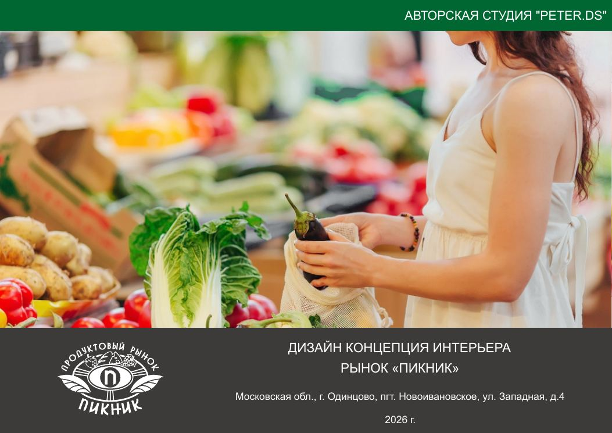
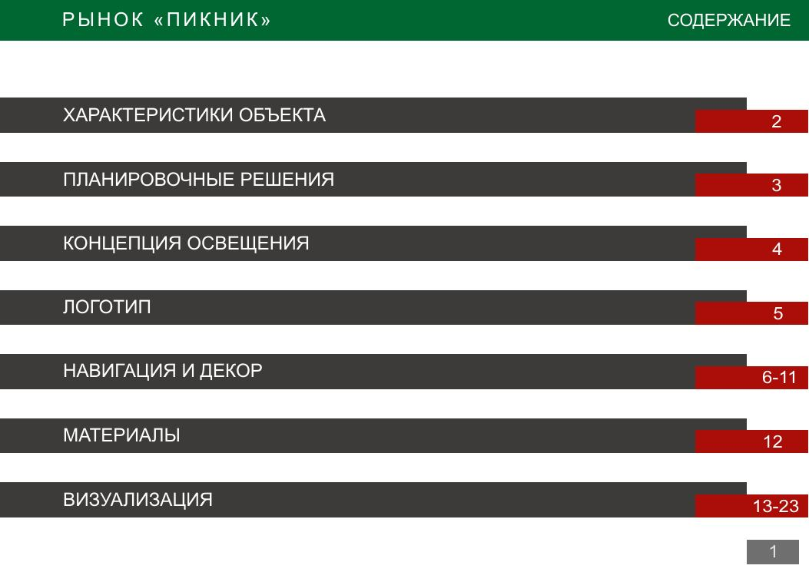
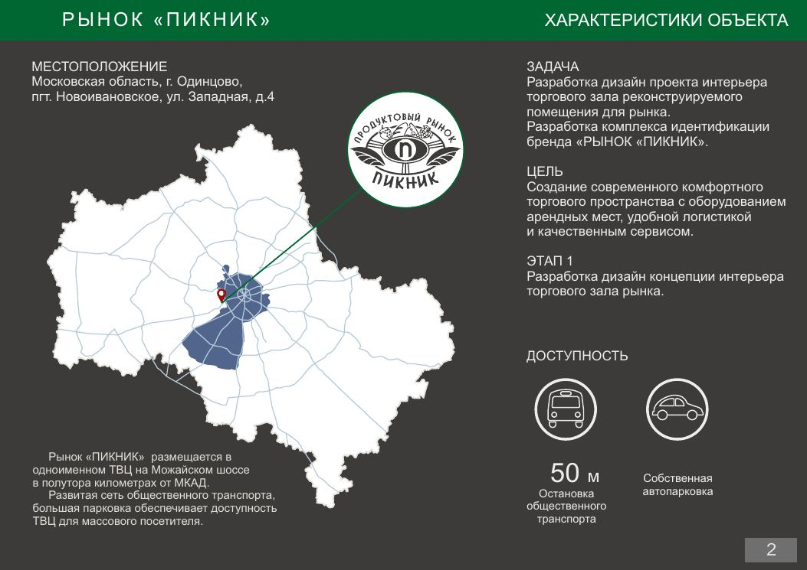
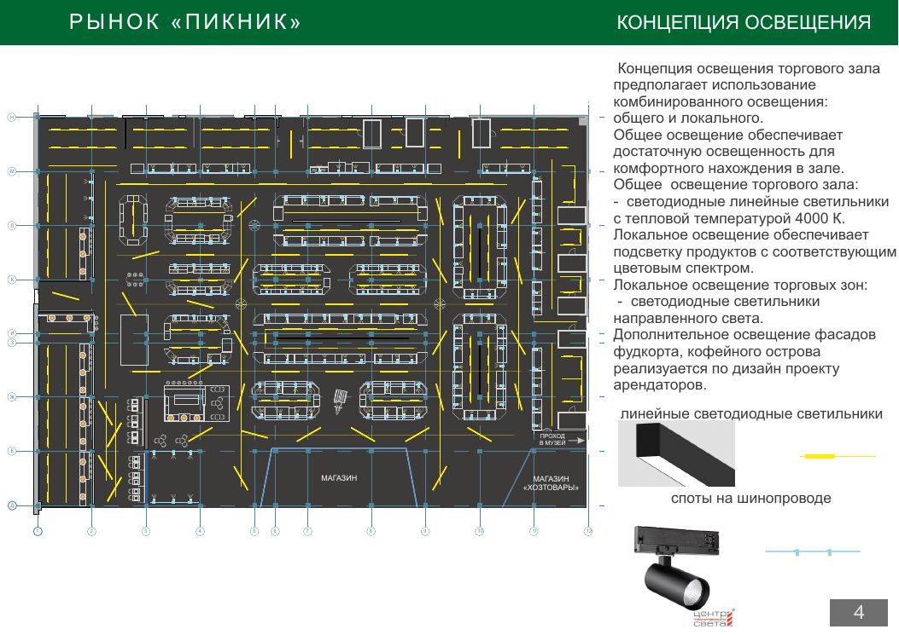
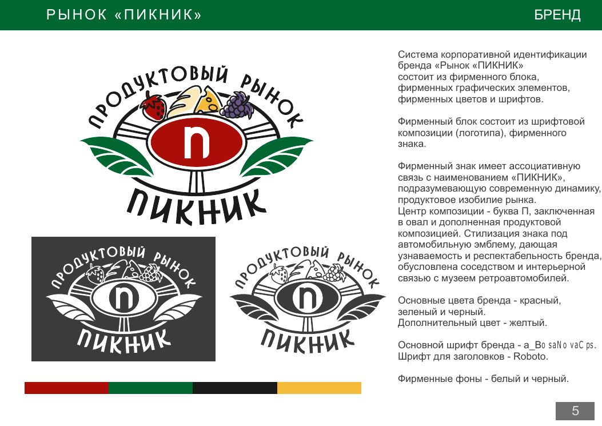
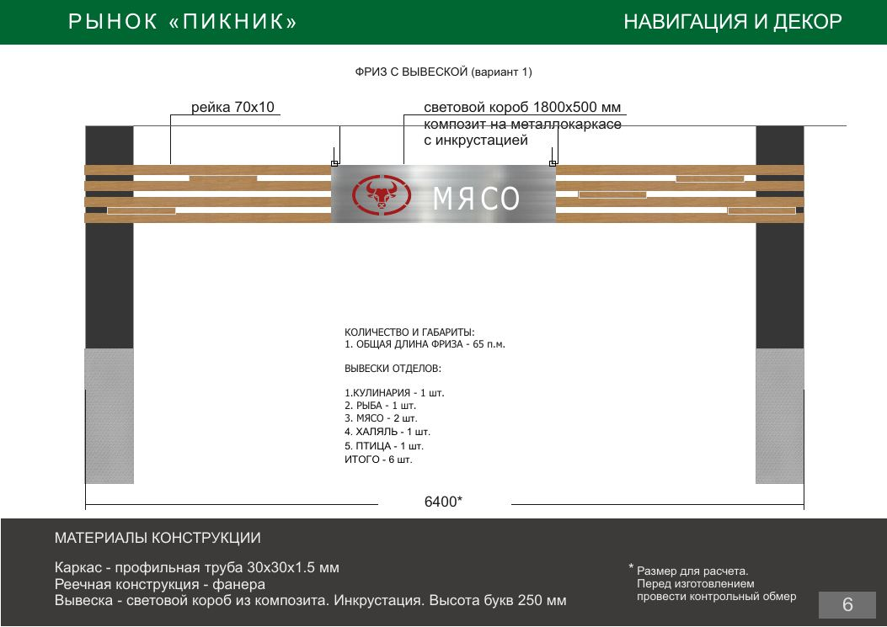
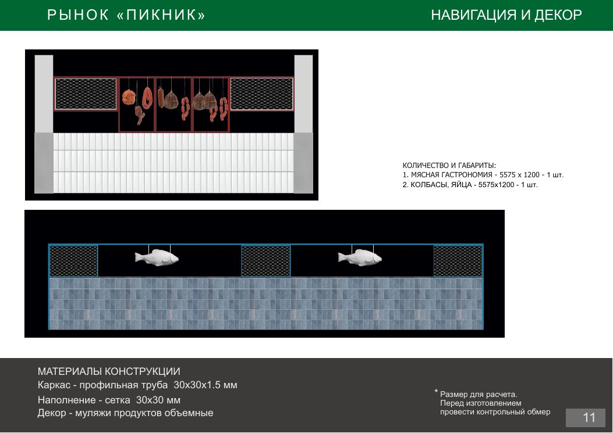
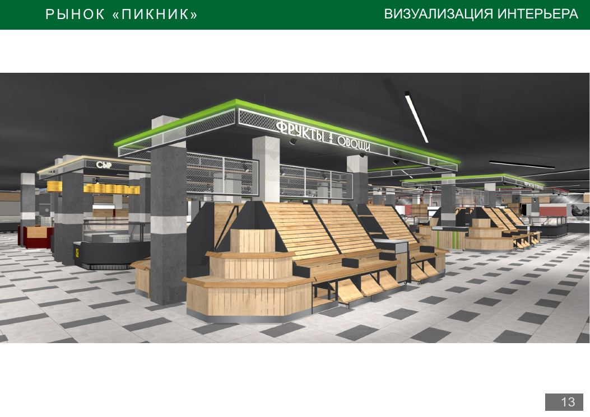
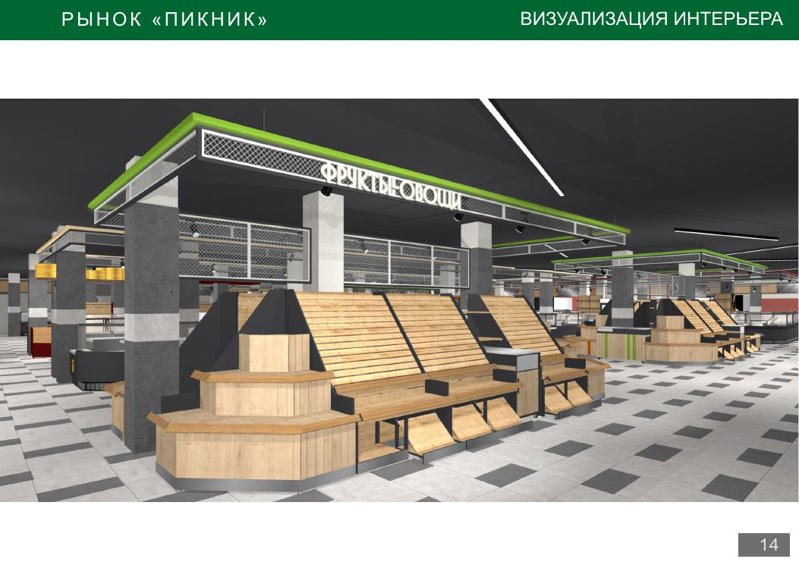
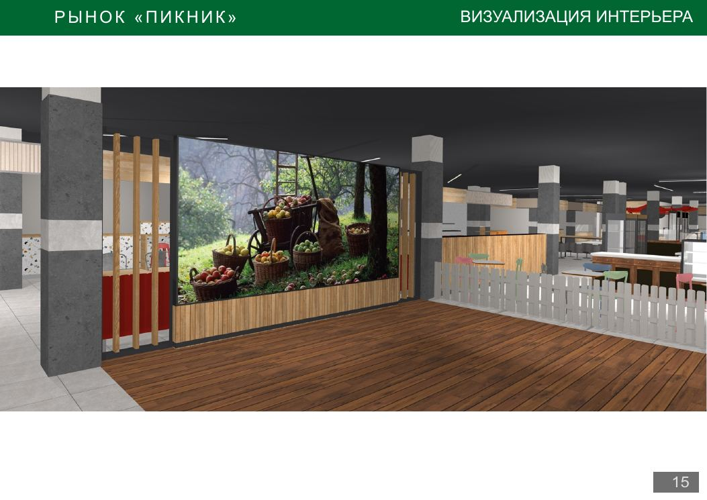

01 · Главное решение
Публичная версия
10
отобранных страниц вместо сырого PDF
Объект
Одинцово
ул. Западная, д. 4
Задача
стандарт
единый уровень среды и резидентов
Применение
M3 / M6 / M7
продукт, позиционирование, запуск
Дизайн-проект работает как доказательство управляемого формата
Для консервативного заказчика это не «картинки интерьера», а подтверждение, что объект собирается как единая среда: с визуальным стандартом, навигацией, светом, торговым оборудованием и понятной логикой движения.
Первый вывод BrandOS
Это не декор ради декора. Это операционная рамка рынка.
- Единая навигация и фризы помогают удержать рынок в одном визуальном стандарте.
- Свет, вывески и материалы поддерживают ощущение организованного объекта, а не стихийного набора арендаторов.
- Дизайн можно переводить в язык сайта, геосервисов, карточек резидентов и B2B-презентации для арендаторов.
02 · Визуальный атлас
Выбранные страницы дизайн-концепции
Ниже — очищенная витрина материала подрядчика. Планировочный технический лист и листы с внутренними рабочими формулировками не вынесены в публичную версию.

ОбложкаДизайн-концепция интерьера
Фиксирует автора, объект, адрес и статус материала как входящей концепции подрядчика.
Роль: идентификация материала

СодержаниеЧто входит в концепцию
Характеристики объекта, свет, логотип, навигация, материалы и визуализации.
Роль: карта документа

ОбъектЛокация и задача
Концепция описывает современное торговое пространство с оборудованием арендных мест, логистикой и сервисом.
Роль: входной факт

СветОбщее и локальное освещение
Свет поддерживает качество выкладки: общий комфорт в зале и локальная подсветка продуктовых зон.
Роль: восприятие качества

БрендЛоготип, знак, цвета
Корпоративный блок, графические элементы, основные цвета и шрифтовая система становятся базой для запуска.
Роль: визуальная идентичность

НавигацияФриз и вывески отделов
Навигационные элементы помогают собрать разные категории в единый читаемый маршрут.
Роль: управление потоком

ДекорОбъёмные элементы и отделы
Декор работает как навигация и как визуальная подпись товарных направлений.
Роль: узнаваемость зон

ВизуализацияТорговый зал как единая среда
Визуализация показывает не отдельную точку, а цельный сценарий рынка: витрины, проходы, свет, вывески.
Роль: первый экран для клиента

ВыкладкаТорговые места и продукт
Материал помогает переводить интерьер в продуктовую логику: что человек видит, выбирает и покупает.
Роль: связка с M3

СценарийСемейное пребывание
Детская и семейная логика усиливает рынок как место визита, а не только покупки продуктов домой.
Роль: B2C-сценарий
03 · Как используем
M2-03 / M3
M6
M7
Что этот материал даёт следующим модулям
Дизайн-концепция становится не приложением «для красоты», а рабочей базой для продуктовой архитектуры, позиционирования и запуска.
Продукт и сценарии визита
Категории, фудкорт, кофейня, детская зона и визуальная логика торгового зала помогают собрать продуктовую матрицу.
Выход: что продаём посетителю
Позиционирование
Фактический уровень дизайна будет проверять будущий дескриптор: он должен звучать точно и не обещать лишнего.
Выход: язык категории
Сайт и геосервисы
Визуальные элементы можно переносить в страницы для арендаторов, карточки рынка, описания отделов и стартовые публикации.
Выход: коммуникации запуска
Решение
Дизайн-концепцию показываем клиенту в хабе как живой материал проекта: она доказывает, что ПИКНИК собирается как управляемая торговая среда, а не как сумма арендаторов.
04 · Что дальше
Что нужно добрать по дизайну
Чтобы материал стал ещё полезнее для запуска, его нужно связать с фактическими ассетами и будущими резидентами.
-
1
Получить финальные файлы логотипа и цветовой системы.
-
2
Сверить дизайн-стандарт с фактическим оборудованием на объекте.
-
3
Привязать визуальные зоны к реестру резидентов.